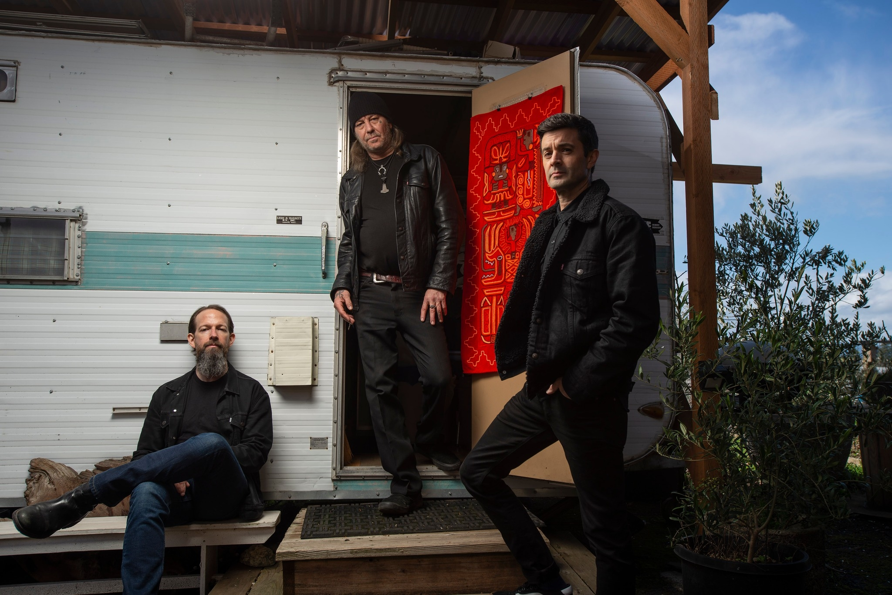

High on Fire – Cometh the Storm
A forceful return where riffs and rage reign supreme—Matt Pike does it again.
When someone asks me, “Who’s your favorite guitarist?”—outside of obvious names like Tony Iommi or Jimi Hendrix—one of the first names that comes to mind is Matt Pike. I’ve enjoyed pretty much every album he’s made with Sleep and High on Fire, and I’ve even found his side projects fairly satisfying. Beyond the impact of the riffs he writes, I’ve always respected him for his solid songwriting and his ability to give space to his fellow musicians.
Because of that, Cometh the Storm was one of my most anticipated albums of the year.
At first, when I listened to Burning Down, it reminded me too much of the Sleep era and didn’t seem particularly exciting. Then, when I saw the track titles, my expectations dropped even more. After delving into arcane and mystical concepts on De Vermis Mysteriis, and drawing inspiration from Robert W. Chambers’ The King in Yellow on Luminiferous and Electric Messiah, seeing titles like Lambsbread, The Beating, and Tough Guy made me go, “What the hell is this?” I loved it when High on Fire leaned into mystical themes, so seeing them pivot to weed and machismo felt like a letdown.
And as if that wasn’t enough, co-founder Des Kensel had left the band. Even though Coady Willis seemed like a solid choice, I didn’t think he could be as good. I was slowly convincing myself I was about to listen to the weakest High on Fire album.
Lucky for me, I was wrong.
Cometh the Storm is a fantastic album. The choice to explore more surface-level themes seems to stem from the need to release six years’ worth of pressure after Electric Messiah’s epic highs. As you can tell from the title track, Coady Willis delivers a performance every bit as good as Des Kensel.
The album is a testosterone-pumping masculinity manifesto, flipping the listener on their head with its tempo shifts. It has everything you’d want from High on Fire: crushing riffs, pounding drums, Middle Eastern melodies, brutal hardcore sections—you name it. You’ll consume it all gladly, because otherwise, Matt Pike will fuck you up.
While High on Fire doesn’t reinvent the genre on their ninth album, they absolutely push themselves creatively. Tracks like Karanlık Yol—clearly influenced by Neşet Ertaş’s “Yolcu”—and Lambsbread tap into more specific geographic inspirations in a more mature way than Death Is This Communion ever did. The track Trismegistus also carries similar regional flavors.
Even where they don’t innovate musically, the band makes sure to deliver top-tier performances. Darker Fleece, which opens with a Dopesmoker nod, is one of their best album closers. The Beating is probably their most fun hardcore punk track to date. That said, I’ll admit the album does contain a few tracks that aren’t particularly memorable—but hey, consider that a small flaw in an otherwise stellar piece.
Another standout aspect of the album is Kurt Ballou. It's no secret that he elevates every band he works with—Nails, Russian Circles, Kvelertak, and of course, Converge. Once bands work with him, they rarely go back. With Cometh the Storm, Ballou has helped High on Fire—already a high-standard band—take another step forward. The drums shake your heartbeat, and the guitars sound like they’re forged in lava. From a production standpoint, it’s their most captivating album yet.
In short, Cometh the Storm is a release where the band clearly tries to reinvent themselves while still playing at their absolute best. It may not be their best album ever, but it’s far from their weakest. And the fact that Matt Pike can still deliver work of this caliber after 12 albums—including Sleep—is nothing short of commendable.
Standouts: Cometh the Storm, Karanlık Yol, Lambsbread, Trismegistus, Darker Fleece
Rating: 9/10